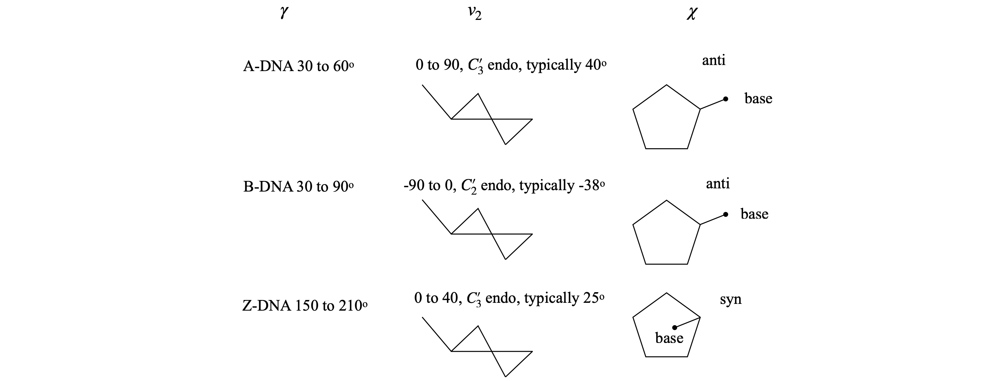

18 Torsion or dihedral angles
Contents
18 Torsion or dihedral angles#
# import all python add-ons etc that will be needed later on
%matplotlib inline
import numpy as np
import matplotlib.pyplot as plt
from sympy import *
init_printing() # allows printing of SymPy results in typeset maths format
plt.rcParams.update({'font.size': 16}) # set font size for plots
18 Dihedral angles#
The torsion or dihedral angle \(\vec \psi\) between two bonds is something we might want to calculate from a chemical structure. A dihedral angle is the angle between two planes, see figure 41. Two such angles, \(\psi\) and \(\phi\) in proteins are used to generate Ramachandran plots as shown in figure 38. A regular or ideal protein helix would have angles \(\phi = -60^\text{o}\) and \(\psi = -50^\text{o}\) and real proteins with a large amount of \(\alpha\)-helical character, such as bacteriorhodopsin, show clusters of points in this area. The other main feature of proteins is the \(\beta\)-sheet and this is a more loosely defined structure and exhibits angles in the top left corner bounded by approximately \(\phi = -60^\text{o}\) and \(\psi = +40^\text{o}\). The exact areas describing the structure are limited by steric repulsion between the atoms as bonds rotate, and are described in most biochemistry, although few chemistry, textbooks. Ramachandran plots can be produced as part of the web interface of sites such as the RCSB Protein Data Bank (www.rcsb.org/pdb/) as well as in textbooks. You could also write your own program that can read ‘.pdb’ or ‘.ent’ files and produce a plot.

Figure 38 Left: Ramachandran plot of the \(\phi\) and \(\psi\) torsion angles in the protein bacteriorhodopsin (pdb 1FBB), which contains extensive \(\alpha\)-helices. Most angles cluster around the values \(\phi = -56^\text{o}, \psi = -53^\text{o}\) typical of an \(\alpha\)-helix. A regular or ideal helix would have angles \(-60^\text{o}\) and \(-50^\text{o}\). The area of \(\beta\)-sheet structure, of which there is very little in this protein, is in the top left corner bounded by approximately \(-55\) and \(+60\) degrees. Right: The structure of the protein shows extensive helical structure. The retinal chromophore, which is positioned in the centre of the column of helices, is shown also.
Part of a peptide chain is shown in figure 39. The backbone forms a repeating sequence -C\(_\alpha\)-C-N-C\(_\alpha\)-C-N-. The peptide unit is the CONH part of the structure, linked together by C\(_\alpha\) atoms containing the amino acid side-chain R. The C\(_\alpha\)-C-O-(N-H) atoms lie in a plane, shown shaded in the top of the figure, as do the atoms O-C-(N-H)-C\(_\alpha\) shown shaded in the lower part. There are two main torsion angles, figure 39, which are \(\phi\), the torsion angle of the planes containing the CN-C\(_\alpha\)C atoms which runs from the C=O to C=O groups, and \(\psi\), the angle between planes containing the NC\(_\alpha\)-CN atoms which starts and ends on the nitrogen atoms. A third angle \(\omega\) is also defined as C\(_\alpha\)C-NC\(_\alpha\) but in a regular protein, this is very close to \(180^\text{o}\). The peptide chain runs from the N terminal to the C. The N terminal of the protein occurs towards the end of the chain with the lowest indexed \(\alpha\)-carbon, therefore the angle \(\phi\) is towards the N terminal, the \(\psi\) towards the C. Torsion angles for side-chains can also be defined; these are given the symbol \(\chi_1, \chi_2\) etc. depending on the type of amino acid.
The picture figure 40 shows that the N to N torsion angles \(\psi\) between planes containing N\(_1\) and N\(_2\), and N\(_2\) and N\(_3\), are both very small,\(\psi_1 \approx -6,\;\psi_2 \approx -14^\text{o}\), which is the angle of the plane containing the bond N\(_2\)CA\(_2\) to that containing the bond C\(_2\)N\(_3\). In this notation, which is similar to that in the .pdb data, CA is the alpha carbon. The \(\phi_1\) angle \(\mathrm{C_1N_2-CA_2C_2}\) is approximately \(-90^\text{o}\); the \(\phi_2\) angle bond, \(\mathrm{C_2N_3-CA_3C_3}\), is \(-140^\text{o}\) approximately. The angles defined for proteins must range from \(-180 \to +180^\text{o}\) and this means that the formula developed below has to have a condition applied to it and this is described at the end of this section. The calculation of the cosine of the dihedral (torsion) angle is developed next.
Left Figure 39, Right Figure 40. Left: Part of a peptide chain. The four atoms defining the \(\psi\) (N to N) and \(\phi\) (CO to CO) torsion angles are shown on the right. As these chains are drawn as if completely extended, the angles are \(180^\text{o}\). When the main chain atoms are eclipsed, the angles are zero. Right: Part of a \(\beta\)-sheet protein structure showing angles \(\psi\) of approximately zero (\(\lt \pm 10^\text{o}\)) and \(\phi\) angles of approx \(-100^\text{o}\).
The geometry of the dihedral or torsion angle \(\psi\) is shown in figure 41, where \(A, B, C\), and \(D\) represent atoms. The angle is taken as the rotation of the AB bond (vector \(\vec a\)) needed to eclipse the CD bond (vector \(\vec c\)) when viewed down BC, vector \(\vec b\). The angles \(\alpha\) and \(\gamma\) are in the planes, BCD and ABC respectively, and represent the bond angles, typically \(100 \to 130^\text{o}\) in molecules depending upon bonding type, sp\(^2\) or sp\(^3\). However, these angles are unimportant because the torsion angle is between the planes that the atoms lie in.

Figure 41. Left: Geometry showing the torsion or dihedral angle \(\psi\). Right: End-view looking down B towards C and showing the positive dihedral angles \(\psi\) between the cross products \(\vec n\) and \(\vec m\) in the planes ABC and BCD. Lower right, two examples of molecules. Distances in pm.
The torsion or dihedral angle \(\psi\) is defined as the angle between the plane ABC and the plane BCD. ABC has a vector \(\vec m\) normal (perpendicular) to \(\vec a \times\vec b\) and BCD has \(\vec n\) normal to \(\vec b \times\vec c\); figure 41. The torsion angle must be independent of the size of the vectors, which means that in the final formula normalized vectors will be used. The angle between vectors \(\vec m\) and \(\vec n\), the dihedral angle \(\psi\), is found by first calculating their dot product,
Because the vectors \(\vec m\) and \(\vec n\) are perpendicular to \(\vec a\) and \(\vec b\) and to \(\vec d\) and \(\vec c\) respectively then,
where \(\vec u_n\) and \(\vec u_m\) are unit vectors along \(\vec n\) and \(\vec m\); see equation 38. The order of vector multiplication is important here. The common vector \(\vec b\) between the two planes is in the middle. If the first vector points towards the join between planes, and the vectors \(\vec a, \vec b, \vec c\) form a head to tail chain, the order is
To ensure the correct vector directions, then \(\vec a = \vec B - \vec A, \vec b = \vec C - \vec B, \vec c = \vec D - \vec C\) if the atoms’ coordinates are the positional vectors \(\vec A, \vec B, \vec C\), and \(\vec D\). If this convention is not followed, the angle could be out by \(180^\text{o}\) and that is usually obvious in a small molecule, but would not be in a protein. Reversing the order of all the vectors leaves the torsion angle unchanged. The crucial dot product is
and we have used \(\cos(\psi) = \vec u_m\cdot\vec u_n\) because the \(\vec u\)’s are unit vectors. Using equations 51 the magnitude (absolute value) of vector \(\vec n\) is \(| n | = | \vec c | | \vec b |\sin(\alpha)\), and \(|\vec m | = | \vec b | | \vec a |\sin(\gamma)\). This means that the dot product equation 53 can be rearranged to give the torsion angle as
To evaluate these equations each vector has to be defined in a basis set. The protein data bank crystallographic and NMR data use a basis set of (orthogonal) Cartesian \(x, y, z\) coordinates, as will those from a molecular dynamics simulation. The \(\vec n\) and \(\vec m\) vectors are defined as differences in these values, for example, in the \((i, j, k)\) basis set \(\vec n = p_1\boldsymbol i + p_2\boldsymbol j + p_3\boldsymbol k\) and \(\vec m = q_1\boldsymbol i + q_2\boldsymbol j + q_3\boldsymbol k\) where the \(p\)’s and \(q\)’s are coefficients or coordinates along each axis. In this case, the angle is calculated using
In vector-matrix form where \(\vec n = \begin{bmatrix}p_1 & p_2 & p_3\end{bmatrix}\) and \(\vec m = \begin{bmatrix}q_1 & q_2 & q_3\end{bmatrix}\), the equation becomes
where the transpose (superscript \(T\)) changes the row vector into a column.
In the special case of proteins, the angles are defined to be between \(- 180^\text{o}\) and \(+180^\text{o}\) and a check has to be made because the cosine can be positive between \(-90^\text{o} \to 90^\text{o}\) and negative between \(-180^\text{o} \to 90^\text{o}\) and again from \(90^\text{o} \to 180^\text{o}\) and one cannot tell from the cosine alone what the angle should be. For example, a cosine of \(-0.77\) could be \(140^\text{o}\) or \(-140^\text{o}\). By calculating the sign of the dot product \(\vec a\cdot\vec n\), the quadrant in which the cosine lies can be determined by multiplying the angle by this sign which is \(-1\) or \(+1\). In Python there is a function to do determine the sign, which is np.sign(…).
Figure 42 shows two residues of strand B of the structure of insulin (www.rcsb.org/ pdf/home.od 2INS.pdb). The torsion angle between the aromatic planes of the phenylalanine and tyrosine residues can be calculated since the coordinates of the atoms are known. It is necessary to choose which atoms are to be involved and to order them to form head to tail vectors. These are shown in the figure.
Figure 42. Two residues of strand B of insulin.
# Algorithm. Dihedral angles
phecd1 = np.array([ -7.497, 20.877, -0.865]) # xyz from 2INS.pdb atoms 349-3590 and 360-361
phecd2 = np.array([ -5.644, 21.663, 0.493])
tyrcd1 = np.array([ -4.106, 13.747, 5.282])
tyrcd2 = np.array([ -1.869, 14.466, 4.723])
vec_a = phecd2 - phecd1
vec_b = tyrcd1 - phecd2
vec_c = tyrcd2 - tyrcd1
m = np.cross(vec_a,vec_b)
n = np.cross(vec_b,vec_c)
psi = np.sign(np.dot(vec_a,n))*np.arccos(np.dot(n,m)/( np.sqrt(np.dot(n,n)) *np.sqrt(np.dot(m,m)) ) )
print('{:s}{:6.2f}{:s}'.format('dihedral angle =',psi*180/np.pi,' degrees') )
dihedral angle =136.71 degrees
19 Torsion angles in sugars and DNA#
The flexibility of the sugar in DNA makes it possible for more than one type of DNA to exist; the A and B forms differ in the conformation of the sugars being \(C'_3\) endo in A-DNA and \(C'_2\) endo in B-DNA. The notation is shown in figure 43; endo is defined as being on the same side of the ring as the \(C'_5\) carbon, exo on the opposite side.
A sugar (ribose, for example) is considered to have a twisted (\(T\)) conformation if three of its five ring atoms lie in one plane; these are the \(C'_1, O'_4\), and \(C'_4\) atoms, as shown in figure 43, whereas the sugar has the envelope (E) form if four of its atoms are in a plane; the \(C'_2\) or \(C'_3\) carbon atom is then out of the plane.
The conformation of the sugar is often represented in terms of its pseudo-rotation angle \(P\), which is the torsion (dihedral) angle \( v_2 = C'_1C'_2 - C'_3C'_4\). The configurations are shown on the far right-hand side of figure 43, showing very approximate angles; the configuration with \(0 < P < 90\) degrees are \(C'_3\) endo and \(-90 < P < 0\) degrees are \(C'_2\) endo. Configurations on the middle of the diagram, \(C'_3\) endo and \(C'_2\) exo, are called north (\(N\)), the others are south (\(S\)).
Figure 43. Left. A \(C3'\) endo sugar. The \(C_4'-O_4'-C_1'\) are in one plane, the \(C_3'\) above the plane on the side of \(C_5'\) and \(C_2'\) below the plane. The cartoon structures on the right show this also. Right. Pseudo rotation angles.
19.1 Pseudo-rotation angles#
The torsion angles for the phosphate and sugar in the DNA are shown below, Figure 44, 45; the torsion angle \(\gamma\) is calculated with atoms \(O'_5C'_5-C'_4C'_3\), the pucker or pseudo-rotation angle \(v_2 = C'_1C'_2 - C'_3C'_4\). The angle \(\chi\) is calculated with atoms \(O'_4C'_1-N_9C_4\) for purines,
and \(O'_4C'_1-N_1C_2\) for pyrimidines. When \(\chi=0\), the \(O'_4-C'_1\) bond is eclipsed with the \(N_9-C_4\) bond in purines and with the \(N_1-C_2\) bond in pyrimidines. The \(C_4\) atom in purines is the carbon next to the nitrogen and which joins both rings, and in pyrimidines, it is also next to the nitrogen but is attached to an oxygen atom. A \(\chi\) torsion angle of about \(60^\text{o}\) means that in the syn configuration the base lies symmetrically over the sugar and when \(\chi = -120^\text{o}\) the base points symmetrically away from the sugar in the anti configuration. The syn-anti configuration is defined as,
A and B type DNA have the torsion angle \(\gamma\) in the range \(30 \to 90^\text{o}\), and angle \(\chi \equiv\) anti, which means that the base does not lie over the sugar. A-DNA has ring pucker with \(C'_3\) endo, and B-DNA, \(C'_2\) endo.

Fig 44. Examples of torsion angles in different types of DNA
Figure 45 Definition of some torsion angles in DNA. The N in the base is N\(_9\) (purines) or N\(_1\).
20 Reading protein data bank data#
A protein data bank listing contains many lines of introductory information, with prefixes such as TITLE, REMARK, or SEQRES; most of this self-explanatory. The data on the crystal’s space group is also to be found here. After these lines, the atom coordinates start with the word ATOM or HETATM if the atom does not belong to an amino acid, for example a porphyrin. The HETATM lines always follow the ATOM lines. At the end of the list, a TER termination statement occurs and either CONECT index numbers, to help drawing the structure or another ATOM line for the next amino acid chain. Details about the data format can be found on the protein data bank website, www.rcsb.org/pdb/home.do. A summary is given below once the coordinate data starts.
The format of all the lines of ATOM and HETATM information is the same.
Columns \(1-6\) identifies type as ATOM or HETATOM.
Columns \(8-11\) contains the index number of the atom in the protein.
Columns \(4-16\) is the atom type.
CA is carbon alpha; C the backbone carbon attached to the oxygen labelled O, and N is the backbone nitrogen. Therefore, only atoms with these labels are important in calculating the \(\phi\) and \(\psi\) torsion angles. The amino acid side chain atoms are labelled CB, CD, CZ, NH1, O1, N1 etc. depending upon the amino acid.
In DNA, the sugar atoms are identified by a star in the order O5*, C5*, C4*, O4*, C3*, O3*, C2*, C1*. The bases are listed next and are identified by unstarred atoms. Phosphorus P is next, followed by its two oxygen atoms O1P and O2P.
Columns \(18-20\) is a three-letter code identifying the amino acid or HOH for water. In DNA just one letter identifies the base C, G, A or T.
Column \(22\) gives the letter indicating the amino acid chain A, B, C etc. In DNA, one chain is listed first then the other.
Columns 24–26 gives the number of the amino acid or nucleic acid base in the list.
Columns \(31-28, 39-46,47-54\) are the x-, y-, and z-coordinates in angstrom. The x data starts on Column 31 and can be up to 8 characters including any minus sign and the decimal point. These values are usually less than \(\pm 40 \;\overset{o}A\) because of the relatively small size of proteins.
Columns \(55-70\) can be ignored.
Columns \(70-80\). This varies but can be protein type or identification and/or data row number.